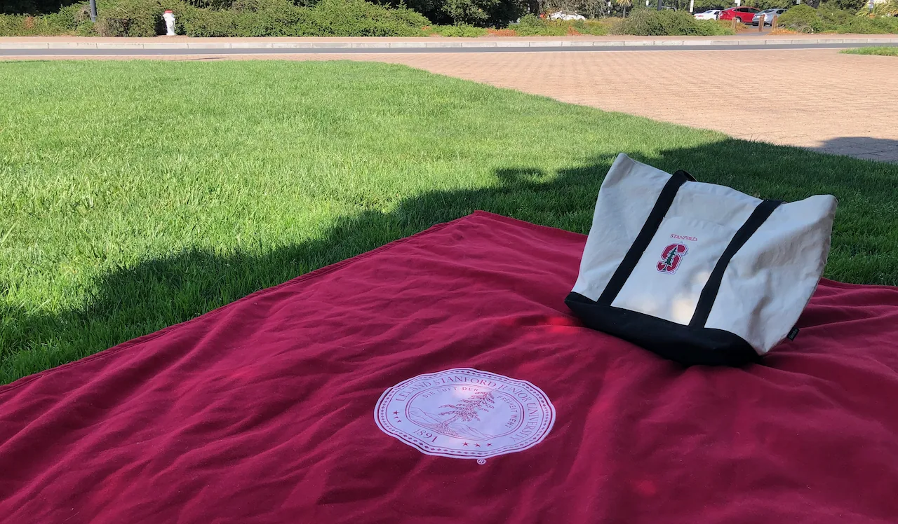

Live → Blog
September 1, 2020

My favorite thing about August was the many one-on-one picnics with my friends there were. I will always choose 10 one-on-one picnics with my favorite people than 1 picnic with all of them.
On the 5th day of August, Bambi's spirit transitioned on to the next dimension. I was reminded once again of T.S. Eliot's Journey of the Magi, one of the most timeless poems I have come across in my brief life. "This: were we led all that way for Birth or Death? There was a Birth, certainly, we had evidence and no doubt." Such comforting words if we meditate on them for long enough, but the pain of first hearing the news is forever imprinted in the memory of my consciousness. It is also a perfect poem - as it always is - to capture the upcoming transitions in my life.
My team and I concluded our Covid-19 project and are currently looking to have our work published. It is not impossible to imagine I might pursue doctoral studies at some point. As I reflect in a blog post, working on this project reminded me of my insatiable curiosity and the pleasure I derive from attempting to solve problems that have potential for significant impact. I am still trying to figure out if my curiosity will be more satisfied in industry or in academia, but I am actively recruiting for Product Management and (Quantitative) Business Analyst roles. I have decided to postpone my PhD plans for now.
As I near the official end of my Stanford Seed Internship, I lament the ways the Covid-19 pandemic has disrupted our lives. No amount of technology can substitute the experience of working in a particular location. Now I know that working remotely is not for me. I love interacting with people at my place of work and learning through my continuous exposure to them. I also prefer to have a clear separation between my home and work lives. If you add a time difference of 9 hours, then one can forget about that clear separation. The challenges of a cross-timezone remote internship notwithstanding, I continue to learn from and be inspired by the work being done at Tsoga Africa. The shared vision of collaborating to build and sustain resilient entrepreneurial ecosystems means I shall remain a part of the Tsoga family way beyond the official Seed Internship.
This month I continued to reflect on the role of fear in my life. I have concluded that the overwhelming emotion in my life is not fear, it is grief. So a question that has been on my mind for most of August is: how have I adapted to the constant loss that has characterized my life for as long as I have lived? What have I gained and what have I lost as a result of that adaptation? I can write books on that - all of my 19 journals address these questions in one way or another - but I will simply say overall I am impressed with the ways I continue to grow in this regard. The key is contained in my favorite quote of all time: "O my soul, do not aspire to immortal life but exhaust the limits of the possible." Loss and death are part of the journey, but the challenge is to love in each moment as best as possible that when it is gone, I would have not a single regret for that moment. That is the new direction I am directing my reflections over the next few time periods.
I intend to graduate in December instead of delaying to June 2021 as I was already planning. Kicking the can to June is aspiring for immortal life. Life is made of transient moments - though they might be timeless. Extending certain moments because they feel safer, as I have been learning, serves nobody in the long run. It simply delays the arrival of new moments that would also enrich my life. I am learning to allow beautiful moments to end when their time comes and to embrace new moments, with all of their uncertainty. There will be growing pains with each transition, but the hope is they are all a part of the adventure. And when I ultimately die, as I will (sorry Urmi), I hope to look back at my moments with a content heart: knowing I did the best I could with the gifts I was endowed with. I draw comfort in the memories I have of Bambi, of how he was a great big brother. We exhausted the limits of the possible, and now I let his spirit return home.
As for me, if it is willed, I look forward to my next adventure beginning February 2021. Where will life lead me next? Hopefully to Austin, but I would also be open to Atlanta, New York, or Boston. This past month I have bid farewell to a few of my close friends and a few more intend on leaving the San Francisco Bay Area soon. This is the perfect time, therefore, to move on to new frontiers. If I remain in the Bay Area, then I am definitely moving away from the South Bay. Here is to September!
← Return to Blog